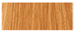
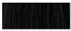
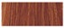
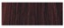
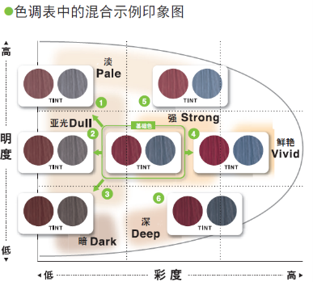
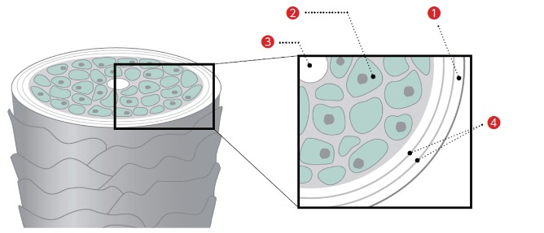
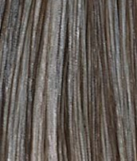

手机扫描二维码答题
00:00:00
染发大师系列课程
基础篇考核
录音中...
您的姓名：
(中文
）
姓名只需选择中/英文任意一个填写即可
您的姓名：
(英文）
1.关于染发控制所需的3大知识，选择错误的一项
①色彩知识
②沟通咨询知识
③染膏知识
④头发知识
2.关于掌握上述3大知识后能够做到的事情（习得技能），选出错误的一项
①头发判断
②染花修正
③锡纸挑染操作技巧
④白发应对
3.关于头发明度的表示，选择所示图片与数字标注一致的选项

① 18Lv

② 2Lv

③ 13Lv

④ 10Lv
4.底色与明度标尺（头发明度）的组合中，选出正确的一项
①8Lv 紫色
②16Lv 浅黄色
③20Lv 黄色
④13Lv 橙色
5.
关于8Lv头发明度的特征，选出错误的一项
①希望表现冷色时，可以利用底色的紫色调
②希望表现暖色时，可以利用底色的红色调
③在追求暖色调时，暖色会被强调
④在追求冷色调时，需要考虑抵消底色的红色调
6.关于头发明度特征的说法，选出正确的一项
①4Lv是新生发，颜色差异明显，能表现鲜艳的色彩
②20Lv是抵消底色的黄色调同时，表现出色彩
③13Lv无论是冷色系还是暖色系都容易表现
④16Lv不含麦拉宁色素，指的是白发。
7.根据目标色彩所需明度的关系，选出错误的一项
①表现银米灰色时，需要事前明度达到18Lv
②表现浅色系色彩时，需要事前明度达到19Lv
③表现奶茶色系时，需要事前明度达到13Lv
④表现灰色系时，需要事前明度达到17Lv
8. 从下列颜色中，选出属于三原色的颜色
①黑色
②棕色
③橙色
④黄色
9.下列颜色组合中，选出不属于互补色关系的一项
①红和绿
②黄和棕
③紫和黄
④橙和蓝
10.关于色调表的说明，选择错误的一项
①纵轴表示明度(明暗)
②越往下表示越暗
③越往右表示棕色越浓
④横轴表示彩度(颜色的鲜艳度)
11.关于光线对染发视觉效果的影响，选择正确的一项
①荧光灯是蓝色调较强的光，所以冷色表现更明显
②白炽灯是红色调较强的光，因此暖色、冷色显色都好看
③荧光灯是蓝色调较强的光，所以暖色表现更明显
④自然光蓝色调较少，所以冷色看起来显色较弱
12.关于碱性染膏的分类，选出正确的一项
①无碱性染膏不含染料，损伤大
②低碱性染膏也能充分提浅
③碱性染膏含有大量护理成分，护理性高
④碱性染膏既能提浅也能压深
13.关于婉黛风的提浅力与完成明度的说明，选出错误的一项
※使用1倍的6%双氧乳时
①8度染膏的提浅力是9.5Lv，完成明度为 8Lv
②5度染膏的提浅力是6Lv，完成明度为5Lv
③7度染膏的提浅力是7Lv，完成明度为7Lv
④11度染膏的提浅力是12Lv，完成明度为11Lv
14.关于嫒缇熙的提浅力与完成明度的说明，选出正确的一项
※使用1倍的6%双氧乳时
①8度染膏的提浅力是9.5Lv，完成明度为8Lv
②9度染膏的提浅力是10.5Lv，完成明度为9Lv
③7度染膏的提浅力是8Lv，完成明度为7Lv
④3度染膏的提浅力是4.5Lv，完成明度为3Lv
15.关于嫒缇熙创意色系的说明，选出错误的一项
①蓝色的染料浓度相当于5L
②黄色的染料浓度相当于10Lv
③红紫色的染料浓度相当于7Lv
④棕色的染料浓度相当于9Lv
16.关于嫒缇熙创意色系的说明，选出正确的一项
①绿色的染料浓度相当于9Lv
②橙色的染料浓度相当于11Lv
③红色的染料浓度相当于13Lv
④紫色的染料浓度相当于5Lv
17.关于推荐停放时间的设定，选出错误的一项
①嫒缇熙宝石蓝灰色的放置时间是10～15分钟
②暖色系的放置时间是25～30分钟
③冷色系的放置时间是5～10分钟
④棕色系的放置时间是20～25分钟
18.关于为达到目标明度而使用的婉黛风染料浓度的说明，选择错误的一项
※2剂3%、停放20分钟的情况
①7Lv染膏的染料浓度是降低4Lv
②9Lv染膏的染料浓度是降低1Lv
③8Lv染膏的染料浓度是降低2Lv
④6Lv染膏的染料浓度是降低5Lv
19.关于为达到目标明度而使用的嫒缇熙染料浓度的说明，选择错误的一项
※2剂4.5%、停放10～15分钟的情况
①事前状态10Lv时，使用7Lv的染膏，完成效果为7Lv
②事前状态10Lv时，使用9Lv的染膏，完成效果为9Lv
③事前状态12Lv时，使用5Lv的染膏，完成效果为6Lv
④事前状态12Lv时，使用7Lv的染膏，完成效果为7Lv
20.关于婉黛风追加色系在色调表中的说明，选择正确的一项
※不是棕色、米色、灰色系的情况
①明度最高的染膏是11度
②彩度最高的是7度
③彩度最高的是8度
④彩度最低的是9度
21.关于嫒缇熙2剂的特点表述正确的一项是
①能让蓝色澄净显色
②放置30分钟后显色会变得稳定
③有抑制头皮刺激的效果
④停放过程中具有膏体不滴落的粘性
22.关于表现目标色的步骤，选出正确的一项
①通过混合来创作色彩➡再混合棕色调整色彩➡增加高彩度的颜色
②加入棕色消除不均匀➡混入明度较低的染膏来增强色彩➡混合13Lv的染膏进一步增强色调
③选择最接近的单品➡找出目标色与单品的差异➡通过混合来弥补差异
④混合8度的棕色获得鲜艳的色彩➡混合5度的染膏获得更鲜艳的颜色
23.关于通
过
混合
来
制作
目标色的方法，请结合下图选择错误的一项

①往1号方向时，降低彩度同时提高明度
②往2号方向时，不改变明度只降低彩度
③往3号方向时，降低明度同时降低彩度
④往4号方向时，提高明度同时提高彩度
24.关于头发判断中需要考虑的要素，选择错误的一项
①头发类型
②事前明度
③操作履历
④喜欢的颜色
25.关于麦拉宁类型判断，选出正确的一项
①红麦拉宁难以提浅，容易呈现强烈的红～橙色调
②黄麦拉宁容易提浅，容易呈现强烈的红～橙色调
③红麦拉宁容易提浅，黄色调强
④黄麦拉宁难以提浅，褪色快
26.关于麦拉宁判断中麦拉宁类型及其说明，选出错误的一项
①红麦拉宁难以呈现柔软质感，容易呈现红色调
②黄麦拉宁容易让发梢看起来干燥
③灰麦拉宁的头发柔软，看起来通透
④棕色麦拉宁的头发粗硬，且表面呈现粗糙的质感
27.关于头发判断中弹力的说明，选出正确的选项
①通过判断毛鳞片的厚度，可以判断出红色调是否容易显现
②诊断方法是将头发绕成环状，用手指捏住，根据其回弹的程度来判断
③细软且缺乏弹力的头发，应混入比目标明度略高的染膏
④粗硬且有弹力的头发，应混入比目标明度略低的染膏
28.关于内部损伤的说明，选出错误的一项
①内部损伤的判断方法是涂抹一次染膏，根据头发提浅的难易程度判断
②将头发从发根到发尾用水浸湿，根据其与干燥状态头发的明度差来判断。
③内部损伤严重时，染发后颜色容易吸色过度、显得暗沉
④内部损伤严重时，需要补充角蛋白和CMC
29.关于毛鳞片损伤的说明，选出错误的一项
①毛鳞片损伤的判断方法是捏住一根头发，从发梢向发根方向滑动来判断
② 毛鳞片受损、毛鳞片层减少时，染膏更容易被吸收，容易变得偏暗。
③通过判断从发根到发梢呈鳞片状生长的毛鳞片的状态，可以了解损伤程度。
④毛鳞片受损、毛鳞片层减少时，颜色更容易脱落，因此褪色更快。
30.关于热损伤的说明，选出错误的一项
①热损伤是指因拉直矫正、日常使用的直板夹、卷发棒等热量所导致的损伤
②过度的热损伤容易导致头发难以提浅、不易上色、颜色暗浊等问题
③ 热损伤严重时，冷色调容易吸收过度而变暗，暖色调难以表现出彩度
④热损伤是指因日常太阳照射的热量，导致只有头发表面变亮，从而产生明度差异的现象。
31.关于热损伤的应对方法，选出正确的一项
①暖色调难以表现出彩度时，混入高明度的棕色
②暖色调难以表现出彩度时，混入相同颜色的高彩度染膏
③冷色调容易变暗沉时，混入低明度的染膏
④冷色调容易变暗沉时，混入高彩度的蓝色
32.关于混合棕色时的黄金比例，选出正确的一项
①颜色：棕色＝２：１
②颜色：棕色＝１：１
③颜色：棕色＝３：１
④颜色：棕色＝１：３
33.根据下图所标注的①～④的名称，选择错误的一项

①毛鳞片
②毛皮质
③麦拉宁
④CMC
34.关于发根白发染中客户的需求与处理方法，选出说明错误的一项
①想要在7度以下进行充分染色➡判断白发比率并采取改善染色的措施
②想要在8～9度充分提亮发色➡采用加减法或二次涂抹
③想要在10度以上优先提亮发色➡使用6～7度的染膏单品
④想要在8～9度的底色上抑制红色调并充分染色➡加减法＋选择添加蓝色的染料的染膏
35.关于加减法的说明，选出正确的一项
①选择混合提浅力较弱和染料浓度较高的染膏的方法
②在色彩中加入0-CL来减少碱含量的染膏选择方法
③增加1剂的量，减少2剂的量的染膏选择方法
④选择混合提浅力高和染料浓度高的染膏，以制作出比单支染膏完成效果更好的方法
36.选择下图所表示的白发率

①30％
②40％
③50％
④60％
37.关于曦绮的特点，选出正确的一项
①白发率10%时使用9度染膏，完成效果9度
②白发率50%时使用6度染膏，完成效果10度
③白发率30%时使用5度染膏，完成效果4度
④白发率30%时使用8度染膏，完成效果8度
38.关于改善白发染效果的方法，选出错误的一项
①同样的染膏涂抹2次
②用空调或风扇吹风冷却
③用保鲜膜或毛巾保温
④延长放置时间
39.关于白发染放置时间说明，选出正确的一项
①染膏的基本放置时间标准为3～5分钟
②染膏的基本放置时间标准为10～15分钟
③染膏的基本放置时间标准为20～25分钟
④染膏的基本放置时间标准为30～35分钟
40.关于完成10度以上明亮白发染的叠涂方法，选出正确的一项
①先用褪浅膏 (c13-CL) 提浅，在染膏附着的状态下直接涂抹深色的染膏(s8-〇)
②先用深色染膏(s8-〇)充分染色，在染膏附着的状态下直接涂抹褪浅膏(c13-CL)
③分2次涂抹褪浅膏(c13-CL)，中间间隔一段时间
④分2次涂抹深色染膏(s8-〇)，中间间隔一段时间
41.在使用加减法进行染膏选择时，以下列出的比例相当于使用几度的染膏单品？选出正确的一项
加減法 9-〇：6-〇＝2：1 双氧乳6% 1倍
①等同于9度的染膏
②等同于8度的染膏
③等同于7度的染膏
④等同于6度的染膏
42.关于改善白发染效果的二次涂抹方法的说明，选出正确的一项
①第1次和第2次使用不同明度的染膏
②第1次涂抹后立即进行第2次涂抹
③第1次涂抹后，第2次涂抹在不同的位置
④第1次涂布后等待15分钟，再用相同的染膏进行第2 次涂抹
43.在使用曦绮和嫒缇熙进行高明度白发时，针对以下配方，请选出双氧乳使用方法正确的一项
S3-CN（自然褐色）：深灰色：13-烟熏琉璃棕色＝1：1：6
①双氧乳6% 1.5倍
②双氧乳6% 3倍
③双氧乳6% 0.5倍
④双氧乳3% 1.5倍
44.关于白发染中针对发梢的处理方法，选出错误的一项
①如果发梢没有明显白发，只考虑目标色进行染膏选择
②即使白发明显，如果客户不在意，只考虑色彩进行染膏选择
③如果白发明显且客户在意，为了覆盖白发，选择混合了棕色等的染膏
④无论发尾处于何种状态，都不考虑损伤进行色彩选择
45.在提出染黑修正方案时，关于必须与客户事先确认的事项，选出正确的一项
①询问是否保留烫发的卷度还是拉直
②询问上一次剪发是什么时候
③详细询问今天想要达到的明度以及对头发损伤的在意程度
④询问平时喝的饮用水种类
46.关于将染黑的头发提浅的过程中，请选出错误的一项
（客户要求：尽可能不想让头发受损，但希望达到今天所期望的明度和色调）
①无论处于何种情况，都要在整个头发上涂抹漂粉
②如果是希望染成冷色调，则需要考虑至少提浅到13度
③如果是希望染成暖色调，则需要考虑提浅到比目标明度高1～2度
④根据希望的呈现的颜色是冷色调还是暖色调，必须提浅的程度不同
47.在染黑修正的操作中，关于发束测试，请选出正确的一项
①进行发束测试时，选择比自己所选染膏配方强一个等级的提浅配方和弱一个等级的提浅配方共两种进行测试
②只测试比自己所选染膏配方强一个等级的提浅配方
③只测试比自己所选染膏配方弱一个等级的提浅配方
④测试自己所选染膏配方和比它强一个等级的提浅配方，共两种
48.在发束测试结果的代表性三种类型中，选出不属于其中的一项
①发根到发中偏暗，发梢变亮
②发根到发中偏亮，只有发梢偏暗
③只有发中偏暗
④从发根开始发卷很强，发梢松散
49.发束测试后的修正操作中，选出错误的一项
① 仅使用一种强度的漂粉时，通过控制放置时间来修正，暗的部分先涂，会变亮的部分后涂
② 使用不同强度的漂粉时，针对暗的部分设置强漂浅力，针对会变亮的部分设置弱漂浅力
③ 使用不同强度的漂粉操作时，针对暗的部分设置弱漂浅力，针对会变亮的部分设置强漂浅力
④ 叠涂操作时，先整体涂抹根据提浅部分设定的漂粉配方，再在偏暗的部分追加强漂浅力的配方
50.染黑修正后发色不均匀，想要最终完成冷色调时，请选出
不适合
用于二次染色的染膏
①sAS（烟熏紫灰色）
②sAQ（清水蓝色）
③Gray Pearl（珍珠青灰色）
④mNV（海军蓝灰色）
51.染黑修正后出现不均匀，且想要最终染成暖色调时，请选出不适合用于二次染色的染膏
①50（红色系）
②fPK（水晶粉色）
③40（橙色系）
④Bordeaux Ruby（宝石红色）
52.染黑修正后发色不均匀，想要染成棕色时，请选出不适合用于二次染色的染膏
①pGG（珍珠米灰色）
②NB（自然棕色）
③hCN（肉桂米色）
④hHZ（榛果米色）
字体大小
染发大师系列课程
基础篇考核
复制